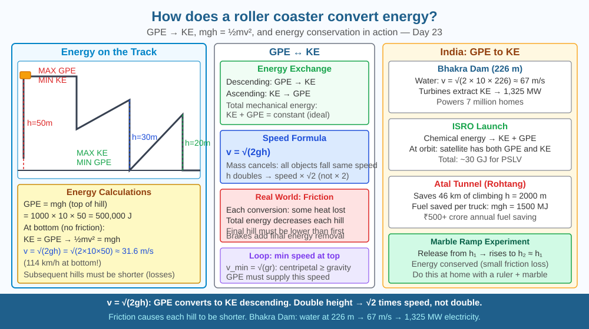

By the end of this lesson, you should be able to explain how GPE and KE interchange, calculate speed at the bottom of a hill, and predict how speed changes when hill height doubles.
A roller coaster starts at the top of the first hill and never needs an engine after that initial climb. It powers every subsequent hill, loop, and turn using only the energy from that first drop. How does stored height become speed, and why does the last hill have to be shorter than the first?
Gravitational Potential Energy (GPE): GPE = mgh At height h = 50 m, mass = 1,000 kg: GPE = 1000 × 10 × 50 = 500,000 J = 500 kJ
Kinetic Energy (KE): KE = ½mv² At bottom (h = 0, no friction): KE = GPE → ½mv² = mgh → v = √(2gh) v = √(2 × 10 × 50) = √1000 ≈ 31.6 m/s (about 114 km/h!)
The interchange: As the coaster descends, GPE decreases, KE increases. As it climbs, KE decreases, GPE increases. With no friction: KE + GPE = constant.
Reality — friction and air resistance: Total mechanical energy decreases slightly with each exchange. Each subsequent hill MUST be lower than the previous one (less GPE available). Real roller coasters are designed with friction in mind — the initial lift provides enough energy for the entire ride PLUS overcoming friction throughout.
Loop physics: At the top of a loop (radius r), minimum speed needed: v_min = √(gr). This ensures centripetal force (mv²/r) ≥ gravity (mg). Designers ensure the coaster has enough speed (from GPE) at the loop entry.
Think of the roller coaster as a bank account where height is money and speed is spending power. At the top of the first hill, the account is full. Every descent makes a withdrawal — height converts to speed. Every climb makes a deposit — speed converts back to height. But every transaction charges a small fee (friction and air resistance). By the end of the ride, the account is nearly empty.
The key insight is that v = √(2gh) — speed at the bottom depends on the square root of height, not height itself. Doubling the height gives only √2 times the speed, not double.
The included SVG shows a side-profile roller coaster track with four hills of decreasing height. The first hill is labelled "h₁ = 50 m, GPE = 500 kJ, KE = 0." Arrows at the bottom of the first drop point rightward and are labelled "v = 31.6 m/s, KE = 500 kJ (minus friction)." The second hill reaches only 40 m — labelled "less GPE available after friction." A small red flame icon at each section of track represents heat lost to friction. A graph inset plots KE (blue line) and GPE (orange line) against position along the track — they trade off continuously, with the total (black dashed line) declining gradually. The loop is labelled at the top: "v_min = √(gr), centripetal force = gravity here."

India's hydroelectric power (Bhakra-Nangal dam at 226 m height, generating 1,325 MW) operates on exactly the same GPE → KE principle. Water falling 226 m reaches v = √(2 × 10 × 226) ≈ 67 m/s — turbines extract this kinetic energy and convert it to electricity. ISRO's launch vehicles gain altitude (GPE) by burning chemical energy — each rocket stage must provide enough energy to reach orbital altitude AND orbital speed. The Atal Tunnel at Rohtang (completed 2020) saves vehicles ~46 km of mountain climbing — a significant fuel saving calculated directly from GPE = mgh: avoiding climbing h = 2,000 m saves mgh joules of fuel energy per vehicle, worth crores across millions of annual crossings.
Marble ramp experiment: Build a ramp from cardboard or a folded notebook. Release a marble from height h₁. It rises to height h₂ on the other side. Observe that h₂ ≈ h₁ (with some loss to friction). Now release from twice the height — the marble travels faster but rises to approximately twice the original height on the far side (not more). Measure the ramp heights with a ruler. If the marble shoots off the end of the ramp as a projectile, measure the horizontal distance it travels — use d = v × t and h = ½gt² to calculate the launch speed v. This is real conservation of energy physics with materials from any classroom.
At quantum scales, energy conservation takes a strange form: the Heisenberg uncertainty principle allows brief violations. ΔE × Δt ≥ ℏ/2 — particles can "borrow" energy for an extremely short time. This gives rise to virtual particles — pairs of particles that pop in and out of existence in the quantum vacuum. The Casimir effect (tiny attractive force between two metal plates in vacuum) is a real, measurable consequence. Also: pair production — a gamma-ray photon with energy ≥ 2m_e c² can convert entirely into an electron-positron pair (E = mc² in reverse). Energy is always conserved, but in quantum mechanics, even what counts as a "particle" versus "energy" becomes blurry.
Predict: A roller coaster car of mass 800 kg starts from a hill of height 60 m. Due to friction, only 90% of the GPE converts to KE by the time it reaches the bottom. Calculate the actual speed at the bottom. Then predict: can this car climb a second hill of height 55 m? Show your reasoning using energy values.
What energy conversion occurs when a roller coaster moves from the top of a hill to the bottom?
Correct answer: C
Why is understanding the energy conversion mechanism more useful than just knowing coasters go fast?
Correct answer: B
If a roller coaster hill were made twice as high, what would you predict about its speed at the bottom?
Correct answer: B
A roller coaster designer is building a new ride. The first hill is 72 m tall. The coaster car has mass 1,200 kg (including passengers).
(a) Calculate the GPE at the top of the first hill (g = 10 m/s²). (b) Assuming 88% efficiency (12% energy lost to friction on the first descent), calculate the KE at the bottom and the speed there. (c) The next hill is 55 m tall. Does the coaster have enough energy to climb it? Show your calculation. (d) At the top of a circular loop of radius 8 m, what is the minimum speed the coaster must have to maintain contact with the track? Use v_min = √(gr). (e) Explain why the ride must be designed so the coaster enters the loop with more than this minimum speed.
A roller coaster does not need to go very fast at the top of a loop — in fact, the minimum safe speed at the very top of a loop of radius 10 m is only about 10 m/s (36 km/h). This feels terrifyingly fast, but the riders are not held in by their seats — they are in free fall. At exactly the minimum speed, the riders are weightless: gravity provides exactly the centripetal force needed for the circular path. This is the same reason astronauts feel weightless in the ISS — not because there is no gravity, but because they are in continuous free fall around Earth.
A roller coaster converts height into speed and back into height throughout the ride, but friction charges a small energy fee at every turn — which is why every hill after the first must be shorter, and why a perfectly efficient perpetual roller coaster is physically impossible.